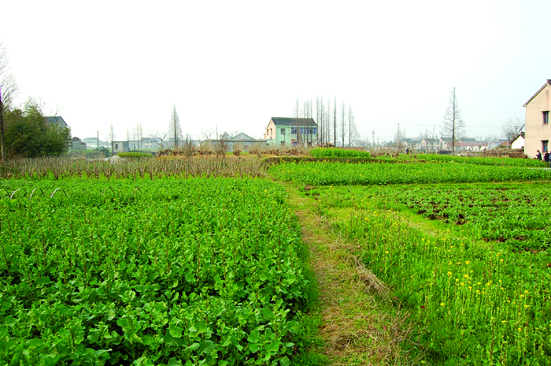

嘉兴市文物保护网 · 市级文物保护单位 · 2014-06-13 · 原文

支家桥遗址位于嘉兴市南湖区凤桥镇茜柳村（原支家桥村）徐家桥以西50米左右，遗址西、北两面临河，占地面积约10000平方米，呈不规则形状。文化层从新石器时代良渚文化一直延续到春秋战国时期。现遗址上主要是村民种植的油菜、桑树等农作物，地面上分布着少量陶片。该遗址延续时间长，文化类型丰富，有很高的历史和科学价值。1981年公布为嘉兴市级文物保护单位。